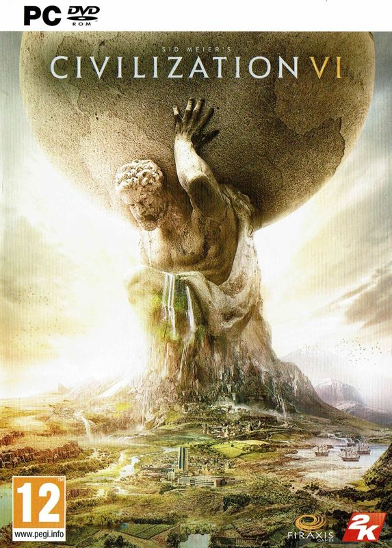

Video Game Review

Sid Meier's Civilization VI
PC
Civilization VI, developed by Firaxis Games and published by 2K Games, is the sixth installment in the
long-running and critically acclaimed Civilization series. Released in 2016, Civilization VI builds upon the
foundations of its predecessors, offering deep turn-based strategy gameplay, a plethora of customization
options, and a rich historical context. In this review, I will discuss various aspects of the game,
including the gameplay, graphics, sound, and expansions.
Gameplay
Civilization VI offers an engaging and addictive turn-based strategy experience, tasking players with
leading their chosen civilization from the ancient era to the modern age. Players must balance various
aspects of their civilization, such as research, culture, military, and diplomacy, to create a thriving
empire that stands the test of time.
One of the most significant innovations in Civilization VI is the new district system, which allows players
to construct specialized areas within their cities, such as campuses, industrial zones, and entertainment
districts. This system adds a new layer of strategic depth to city planning and management, as players must
carefully consider where to place their districts and how they will interact with the surrounding terrain.
Another notable feature of Civilization VI is its revamped government and policy system, which offers
players a wide range of customization options and strategic choices. As players advance through the game,
they can adopt various forms of government, each with its unique benefits and drawbacks, and select specific
policies to shape their civilization's growth and development.
Graphics
Civilization VI features a vibrant and visually appealing art style, with detailed and diverse landscapes,
units, and buildings that reflect the various historical eras and cultures. The game's hexagonal grid and
user interface are clean and intuitive, making it easy for players to navigate the game world and manage
their empire. The game's visuals effectively convey the sense of progress and growth as players guide their
civilization through the ages.
Sound
The game's soundtrack, composed by Geoff Knorr, is an excellent collection of orchestral pieces that
represent the various civilizations in the game. Each civilization has its unique musical theme, which
evolves and adapts as the game progresses through different eras. The soundtrack not only provides an
immersive and engaging audio experience but also contributes to the game's historical and cultural
atmosphere.
Expansions
Civilization VI has received two major expansions, "Rise and Fall" and "Gathering Storm," which
significantly enhance and expand upon the base game's content. These expansions introduce new gameplay
mechanics, such as the loyalty system, era score, and climate change, as well as additional civilizations,
leaders, units, and wonders. The expansions add a wealth of content and strategic depth to the game, making
Civilization VI an even more comprehensive and engrossing experience.
Conclusion
Civilization VI is an outstanding turn-based strategy game that offers players an engaging and deep
experience, with its intricate gameplay mechanics, vibrant visuals, immersive soundtrack, and rich
historical context. The game's expansions further enhance and enrich the experience, making Civilization VI
a must-play title for both fans of the series and newcomers to the genre. Whether you're a veteran
strategist or a budding empire-builder, Civilization VI provides countless hours of entertainment and
enjoyment as you guide your civilization to stand the test of time.
Just one more turn...
Did you enjoy my review of this video game? Check out one of my favorite game reviews below or see a
list of my reviews!
More importantly, I'm always looking for new music to enjoy. Let
me know what you're currently listening to!
My Favorites
Read why these albums are my all-time favorites!